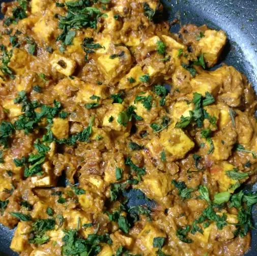

Shahi Paneer

See above for the finished result!
When we were kids, whenever my parents went out to an adults only party, my mother used to ask us what we wanted for dinner at home. 99% of the time, our choice was pooris and shahi paneer. My mother was always nice enough to oblige. Here is the recipe. It is quite rich and hence a nice treat.
Ingredients
- 2 tbsp cooking oil
- 1 large onion
- 4 cloves garlic
- 1 tsp ground cumin
- 1 tsp ground coriander
- 1/2 tsp ground turmeric
- 1/2 tsp Kashmiri red chili powder
- 4 tomatoes
- 1/2 pound paneer
- 1 tsp white sugar
- 1/4 cup cream
Steps
- Heat the oil in a large skillet over medium heat. Cook the onion and garlic in the hot oil until the onions are soft and golden brown, about 5 minutes. Sprinkle the cumin, coriander, turmeric, and chili powder over the onion and garlic; continue cooking until the seasonings are fragrant, about 30 seconds.
- Pour the pureed tomatoes into the skillet; cook until the excess liquid evaporates and the oil separates, 3 to 5 minutes. Add the paneer, water, sugar, and salt to the mixture; stir gently so the paneer does not break apart. Cook until the paneer begins to absorb some of the liquid, about 10 minutes. Stir the cream into the mixture and simmer another 5 minutes. Garnish with cilantro to serve.